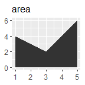
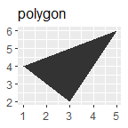

各位看客：
Learn-R 仍在写作流程中。本章节正在进行写作和结构调整，可能出现混乱或不完整的情况。
Learn-R 仍在写作流程中。本章节正在进行写作和结构调整，可能出现混乱或不完整的情况。
ggplot2(Wickham 2016)具有底层的图形语法，ggplot2: Elegant Graphics for Data Analysis重点解释了这套语法， 本章节为其学习笔记。
ggplot2具有颜色（color）、大小（size）、形状（shape）、填充（fill）等美学属性，适用于不同类型的图形。
在绘图美学中，少即是多，使用美学映射需要节制。与其用一幅非常复杂的图形一次展示所有，不如创造一些简单的情节，讲述一个故事，让读者的认识从无到有。
ggplot2的分层结构1使得我们可以以结构化的方式设计和构建图形。一般来说，图层有三个功能：
df <- data.frame(
x = c(3, 1, 5),
y = c(2, 4, 6),
label = c("a", "b", "c")
)
p <- ggplot(df, aes(x, y, label = label)) +
labs(x = NULL, y = NULL) +
theme(plot.title = element_text(size = 12))
p + geom_point() + ggtitle("point")
p + geom_text() + ggtitle("text")
p + geom_bar(stat = "identity") + ggtitle("bar")
p + geom_tile() + ggtitle("raster")
p + geom_line() + ggtitle("line")
p + geom_area() + ggtitle("area")
p + geom_path() + ggtitle("path")
p + geom_polygon() + ggtitle("polygon")





根据x轴是否连续和是否展示中间值，比较基本的有：
df <- data.frame(x = 1:3,
y = c(18, 11, 16),
se = c(1.2, .5, 1.0))
base <- ggplot(df, aes(x, y,
ymin = y - se,
ymax = y + se))
base + geom_crossbar()
base + geom_pointrange()
base + geom_smooth(stat = "identity")
base + geom_errorbar()
base + geom_linerange()
base + geom_ribbon()


汇总数据的每一行代表多个观测值，因此需要考虑权重变量。权重变量的选择将影响绘图和得出的结论。
对于点图、线图等简单图形，使用大小（size)美学。
# Unweighted
ggplot(midwest, aes(percwhite, percbelowpoverty)) +
geom_point()
# Weighted by population
ggplot(midwest, aes(percwhite, percbelowpoverty)) +
geom_point(aes(size = poptotal / 1e6)) +
scale_size_area("Population\n(millions)",
breaks = c(.5, 1, 2, 4))

对于涉及统计转换等复杂图形，使用weight美学指定权重。权重支持平滑、量化回归、箱型图、直方图、密度图等情形。我们无法直接从图中看出权重变量，它也不会产生图例，但会改变统计汇总的结果。
# Unweighted
ggplot(midwest, aes(percwhite, percbelowpoverty)) +
geom_point() +
geom_smooth(method = lm, size = 1)
# Weighted by population
ggplot(midwest, aes(percwhite, percbelowpoverty)) +
geom_point(aes(size = poptotal / 1e6)) +
geom_smooth(aes(weight = poptotal), method = lm, size = 1) +
scale_size_area(guide = "none")
绘制地理空间数据是一项常见的可视化任务，它需要专门的工作。通常来讲，可以把任务分成两步：
R语言内置了地图包，虽然不是最新的，但是一个好的起点。这里从中提取密歇根州的县界：
library(tidyverse) # 用于数据处理
mi_counties <- map_data("county", "michigan") %>%
select(lon = long, lat, group, id = subregion)
head(mi_counties)
#> lon lat group id
#> 1 -83.9 44.9 1 alcona
#> 2 -83.4 44.9 1 alcona
#> 3 -83.4 44.9 1 alcona
#> 4 -83.3 44.8 1 alcona
#> 5 -83.3 44.8 1 alcona
#> 6 -83.3 44.8 1 alcona利用散点图可以看到数据集中每个县的角落，通过geom_polygon()将散点图绘制成地图：
ggplot(mi_counties, aes(lon, lat)) +
geom_point(size = .25, show.legend = FALSE) +
coord_quickmap()
ggplot(mi_counties, aes(lon, lat, group = group)) +
geom_polygon(fill = "white", color = "grey50") +
coord_quickmap()

coord_quickmap()调整坐标轴，以确保经度和纬度在同一比例上呈现。但地理空间数据往往需要更精准的方法，因此ggplot2提供了geom_sf()和coord_sf()来处理简单特征格式的空间数据。
上述方法具有局限性，最典型的是：现实世界的地图不是简单地按照”经度-纬度”的数据格式绘制的。 地图的矢量数据通常使用由开放地理空间联盟制定的”简单特征”（simple features）标准进行编码。 sf包(Pebesma 2018)为处理这类数据提供了优质的工具集，ggplot2中的geom_sf()和coord_sf()函数就是为与sf包一起工作而设计的。
library(ozmaps) # 提供澳大利亚的地图数据
library(sf)
#> Linking to GEOS 3.9.1, GDAL 3.4.3, PROJ 7.2.1; sf_use_s2() is TRUE
ozmap_states
#> Simple feature collection with 9 features and 1 field
#> Geometry type: MULTIPOLYGON
#> Dimension: XY
#> Bounding box: xmin: 106 ymin: -43.6 xmax: 168 ymax: -9.23
#> Geodetic CRS: GDA94
#> # A tibble: 9 × 2
#> NAME geometry
#> * <chr> <MULTIPOLYGON [°]>
#> 1 New South Wales (((151 -35.1, 151 -35.1, 151 -35.1, …
#> 2 Victoria (((147 -38.7, 147 -38.7, 147 -38.7, …
#> 3 Queensland (((149 -20.3, 149 -20.4, 149 -20.4, …
#> 4 South Australia (((137 -34.5, 137 -34.5, 137 -34.5, …
#> 5 Western Australia (((126 -14, 126 -14, 126 -14, 126 -1…
#> 6 Tasmania (((148 -40.3, 148 -40.3, 148 -40.3, …
#> 7 Northern Territory (((136 -13.8, 136 -13.8, 136 -13.8, …
#> 8 Australian Capital Territory (((149 -35.2, 149 -35.2, 149 -35.3, …
#> 9 Other Territories (((168 -29.1, 168 -29, 168 -29, 168 …sf数据的一个优势，在于我们可以直观地看到数据的整体结构。澳大利亚由6个州和一些地区组成，共9个地理单元，因此数据中有9行。geometry列的每个元素都是一个多边形对象，指定一个或多个多边形顶点，标示着一个地区的边界。
对于这种格式的数据，我们可以使用geom_sf()和coord_sf()绘制一张可用的地图而不需要制定任何参数，甚至不需要明确美学。
geom_sf()使用ggplot2中其他地方没有使用的geometry美学，这种美学可以通过以下三种方式之一来制定。
geom_sf()自动将名为geometry的列映射到地图中。geom_sf()自动检测geometry格式的列，即使该列名不为geometry。aes(geometry = my_column)手动指定映射，在数据中有多个geometry格式的列时很有用。ggplot2支持多层geom_sf()叠加。使用rmapshaper包(Teucher and Russell 2022)简化边界，以减少渲染绘图的时间。当原始数据集（本例中为abs_ced）的存储分辨率高于绘图要求时，这通常是个好主意。
oz_states <- ozmap_states %>% filter(NAME != "Other Territories")
oz_votes <- rmapshaper::ms_simplify(abs_ced)
#> Registered S3 method overwritten by 'geojsonlint':
#> method from
#> print.location dplyr
ggplot() +
geom_sf(data = oz_states, mapping = aes(fill = NAME), show.legend = FALSE) +
geom_sf(data = oz_votes, fill = NA) +
coord_sf()图上添加标签：
sydney_map <- abs_ced %>% filter(NAME %in% c(
"Sydney", "Wentworth", "Warringah", "Kingsford Smith", "Grayndler", "Lowe",
"North Sydney", "Barton", "Bradfield", "Banks", "Blaxland", "Reid",
"Watson", "Fowler", "Werriwa", "Prospect", "Parramatta", "Bennelong",
"Mackellar", "Greenway", "Mitchell", "Chifley", "McMahon"
))
ggplot(sydney_map) +
geom_sf(aes(fill = NAME), show.legend = FALSE) +
coord_sf(xlim = c(150.97, 151.3), ylim = c(-33.98, -33.79)) +
geom_sf_label(aes(label = NAME), label.padding = unit(1, "mm"))
#> Warning in st_point_on_surface.sfc(sf::st_zm(x)):
#> st_point_on_surface may not give correct results for
#> longitude/latitude data
geom_sf_label()函数内部使用sf包中的函数st_point_on_surface()来放置标签，出现上述警告是因为sf用于计算几何量（例如中心点、内部点）的大多数算法都是基于这样一个假设：点位于一个平坦的二维表面上，并以笛卡尔坐标作为参数。这种假设并不严格，在某些情况下（例如，靠近两极的地区），以这种方式处理经度和纬度的计算会得到错误的答案。因此，sf软件包在依赖这种近似方式进行计算时将产生警告。
添加其他图层：
oz_capitals <- tibble::tribble(
~city, ~lat, ~lon,
"Sydney", -33.8688, 151.2093,
"Melbourne", -37.8136, 144.9631,
"Brisbane", -27.4698, 153.0251,
"Adelaide", -34.9285, 138.6007,
"Perth", -31.9505, 115.8605,
"Hobart", -42.8821, 147.3272,
"Canberra", -35.2809, 149.1300,
"Darwin", -12.4634, 130.8456,
)
ggplot() +
geom_sf(data = oz_votes) +
geom_sf(data = oz_states, colour = "black", fill = NA) +
geom_point(data = oz_capitals, mapping = aes(x = lon, y = lat), colour = "red") +
coord_sf()如果关注地图的准确性，利用经纬度在笛卡尔平面上进行绘制并非最佳办法，至少存在两个基本问题：
地球既不是一个平面，也不是一个完美的球体。关于地球形状的一系列假设被称为大地基准，虽然它对某些数据的可视化可能并不重要，但对其他数据来说，它是至关重要的。有几种不同的选择可以考虑：如果重点是北美，“北美基准”（NAD83）是一个很好的选择；如果视角是全球，“世界大地测量系统”（WGS84）可能更好。
地图的形状。地球近似椭圆体，但大多数情况下，空间数据需要绘制在一个二维平面上。不可能在不发生扭曲或切割的情况下把椭圆体的表面映射到一个平面上，因此必须对扭曲作出选择。这就是地图投影的工作。
地图投影通常按照它们保留的几何属性来分类，例如：
和Photoshop的图层类似。↩︎